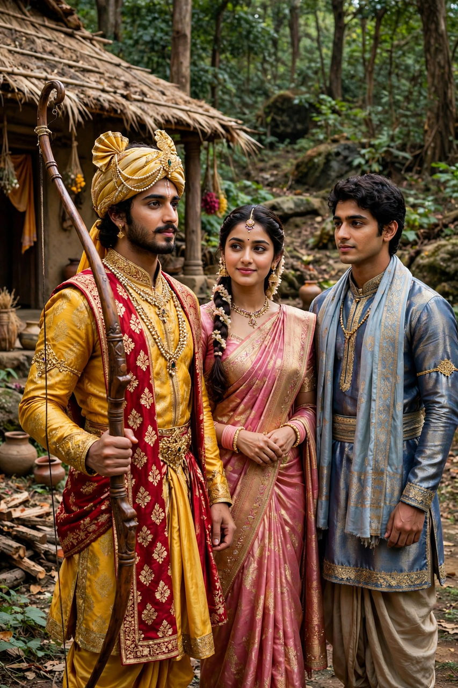

From Wikipedia, the free encyclopedia
| Rama | |
|---|---|
| Affiliation | Hinduism; seventh avatar of Vishnu |
| Spouse | Sita |
| Parents | King Dasharatha and Kausalya of Ayodhya |
| Brothers | Bharata, Lakshmana, Shatrughna |
| Weapon | Bow (Sharanga/Kodanda) |
| Epic | The Ramayana of Valmiki |
| Festival | Rama Navami; Diwali (return to Ayodhya) |

Rama is a major deity of Hinduism, the seventh avatar of the god Vishnu and the hero of the Sanskrit epic Ramayana. Prince of Ayodhya, exiled to the forest for fourteen years on the eve of his coronation, he fought and killed the demon-king Ravana, who had abducted his wife Sita, and returned to reign as the model of the righteous king — Maryada Purushottama, "the perfect man", the supreme upholder of dharma. He is among the most widely worshipped gods in India, the centre of the Rama Navami festival and of the return celebrated at Diwali, and a figure of devotion, literature and politics across South and Southeast Asia.
The epic attributed to the sage Valmiki tells how Rama, eldest son of King Dasharatha, was exiled through the boon claimed by the queen Kaikeyi for her own son Bharata; his wife Sita and brother Lakshmana insisted on sharing his exile. In the forest the demon-king Ravana of Lanka, inflamed by his sister Shurpanakha's humiliation, abducted Sita by deceit. Rama allied with the monkey king Sugriva, and his devotee Hanuman found Sita in Lanka and fired the city. With an army of monkeys and bears, and a bridge of stones built across the sea, Rama invaded Lanka and slew Ravana in a duel of cosmic scale. Sita, vindicated by a trial by fire, returned with him to Ayodhya, where their coronation closes the epic's main arc; the later book (Uttara Kanda) adds Sita's second exile and Rama's departure from the world in the Sarayu river — additions many scholars judge later than the core text.
Rama is the ideal of the bhakti poets — Tulsidas's Hindi Ramcharitmanas (16th century) made his story the scripture of North Indian devotion — and of traditions that chant his name (Mahatma Gandhi's dying words are popularly remembered as "Hey Ram"). His temple at Ayodhya, built on the site traditionally held to be his birthplace and consecrated in 2024 after decades of dispute and litigation over the Babri Masjid that preceded it, is among the most consequential religious sites of modern India. Versions of his story structure the classical cultures of Thailand, Cambodia, Indonesia and beyond.
Hinduism · Vishnu · Hanuman · Krishna · Hindu mythology · Parvati